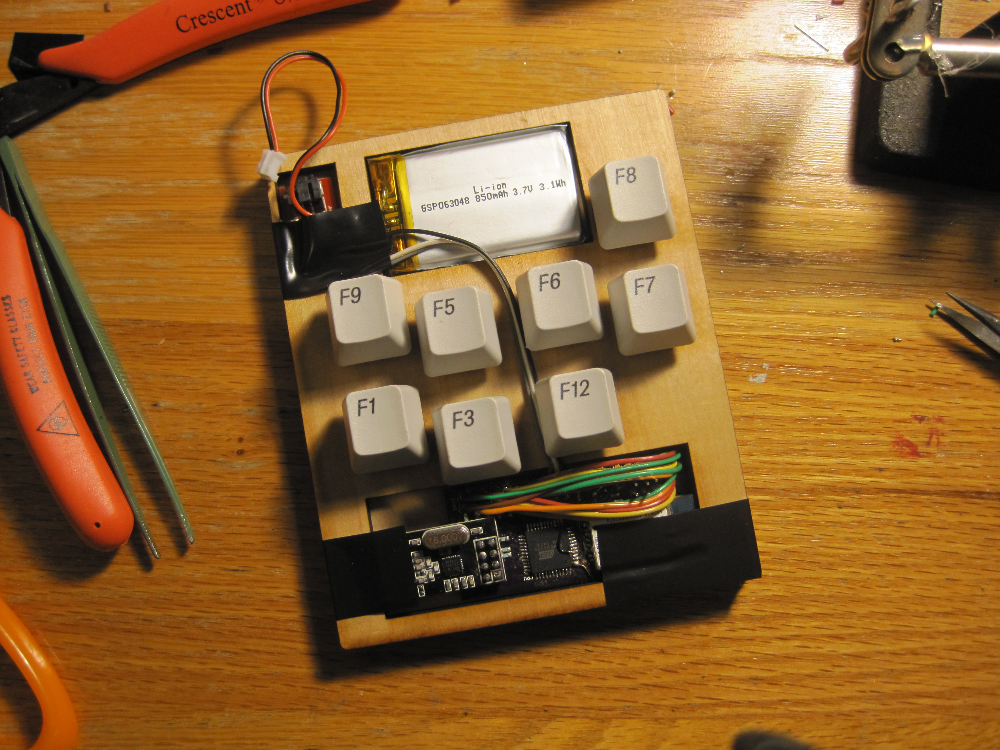
I like chorded keyboards because they can be used while walking or in VR. I've made lots of mock-ups of them and some working prototypes.
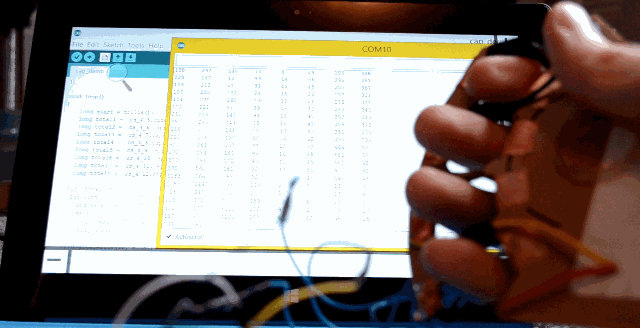
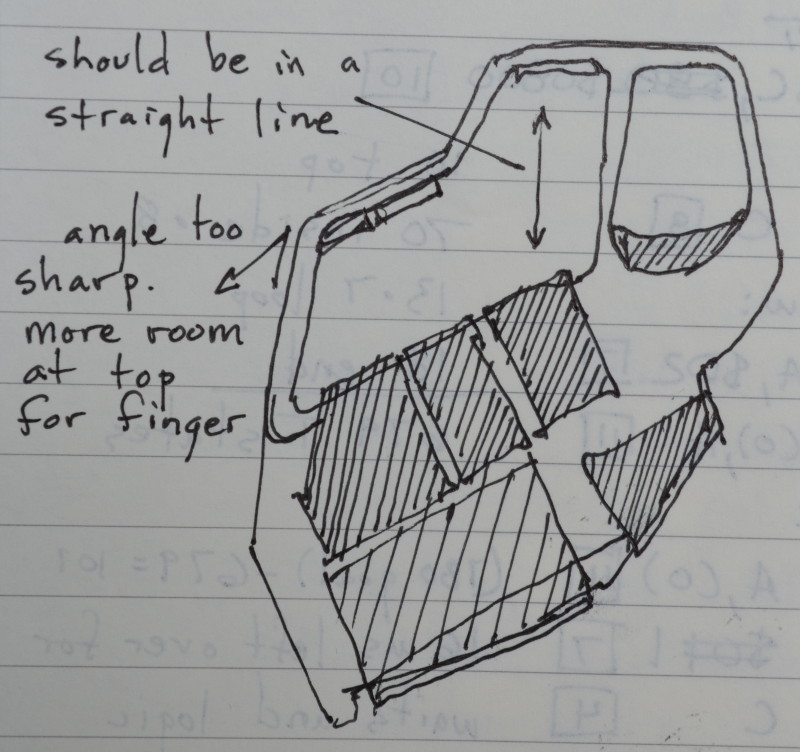
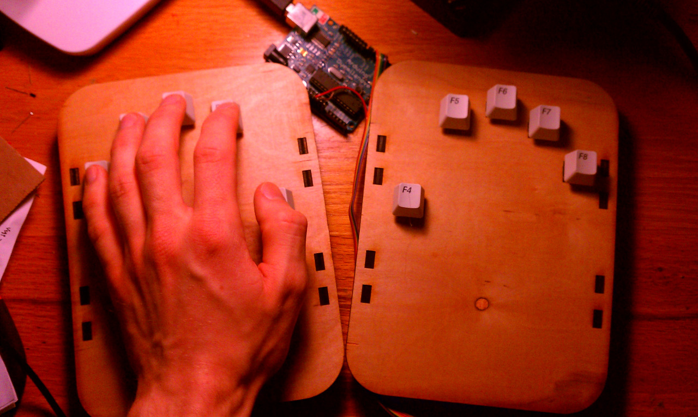
Cardboard prototype:
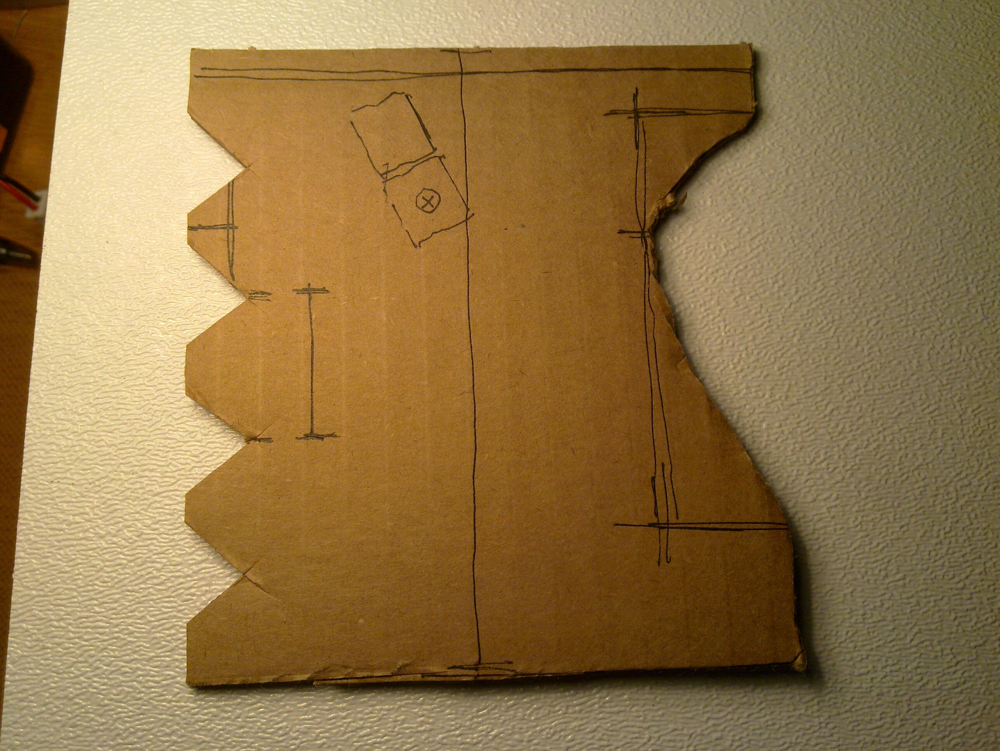
The laser cut result:
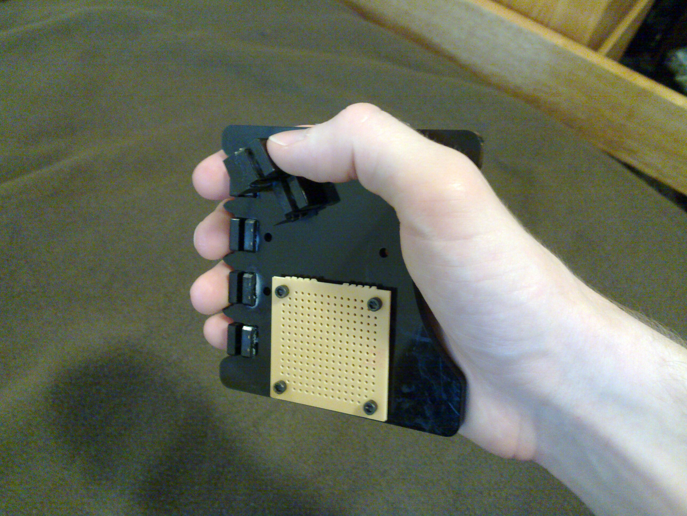
Laser cut prototype concept:
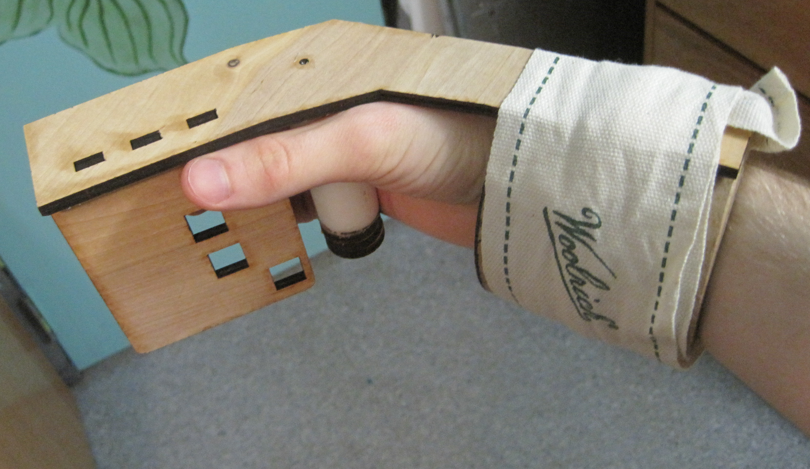
Using homemade playdough to prototype fit:
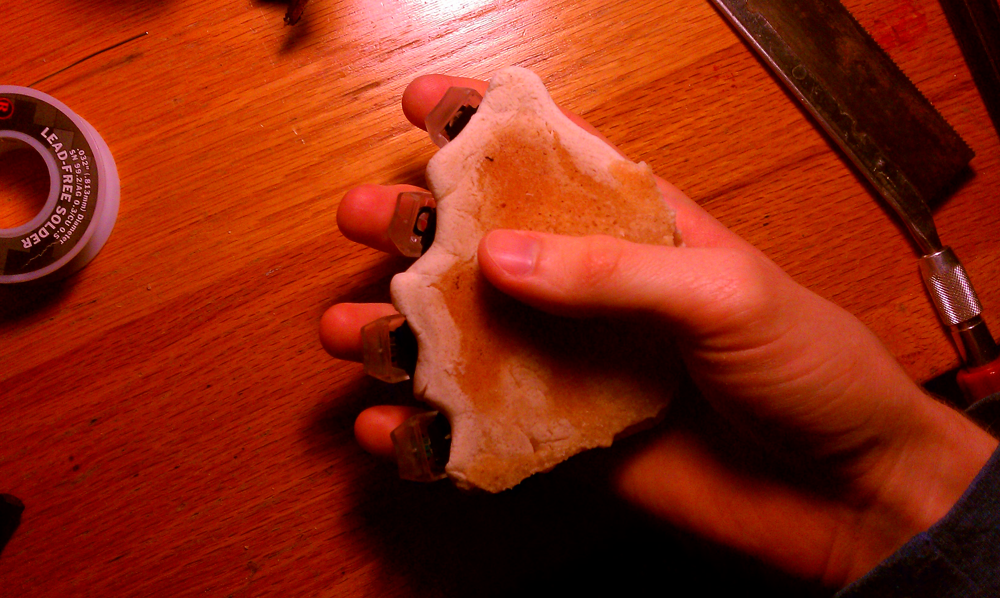
Miscellaneous mock ups:
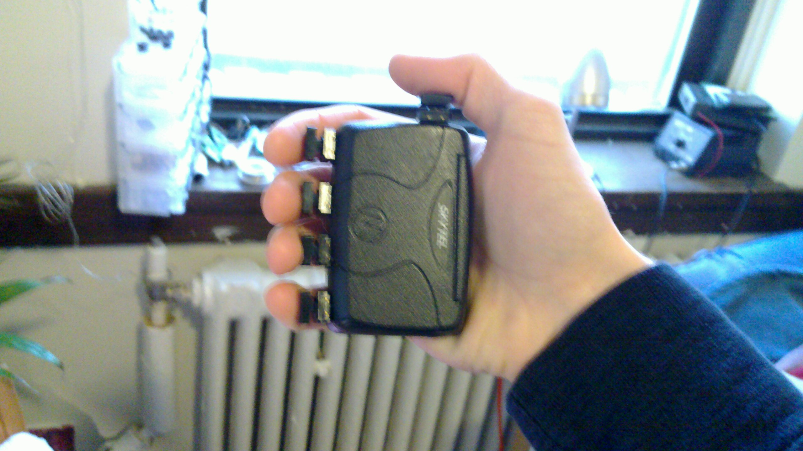
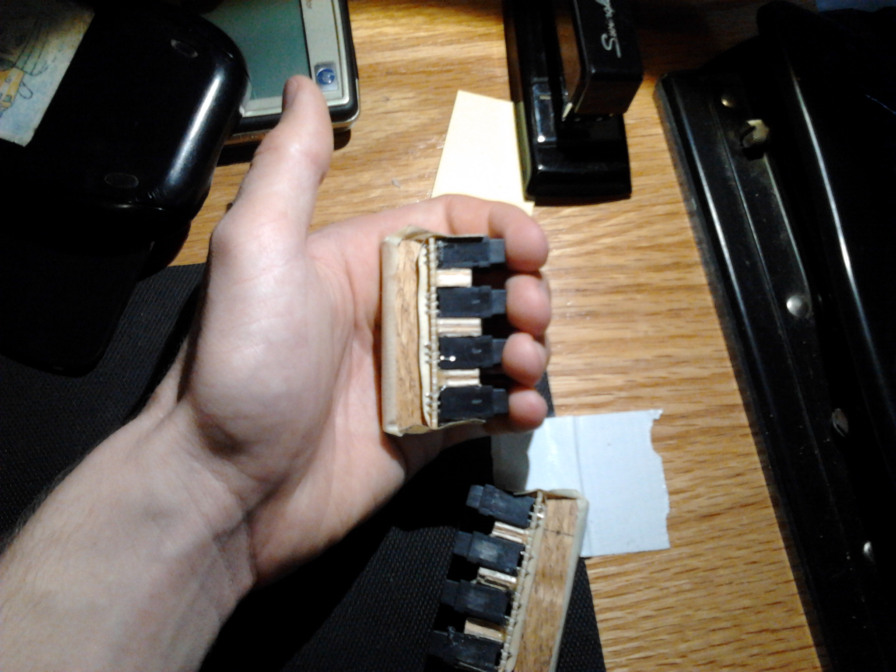
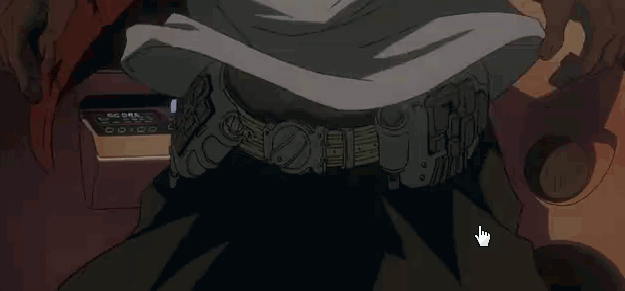
Mostly done during undergrad